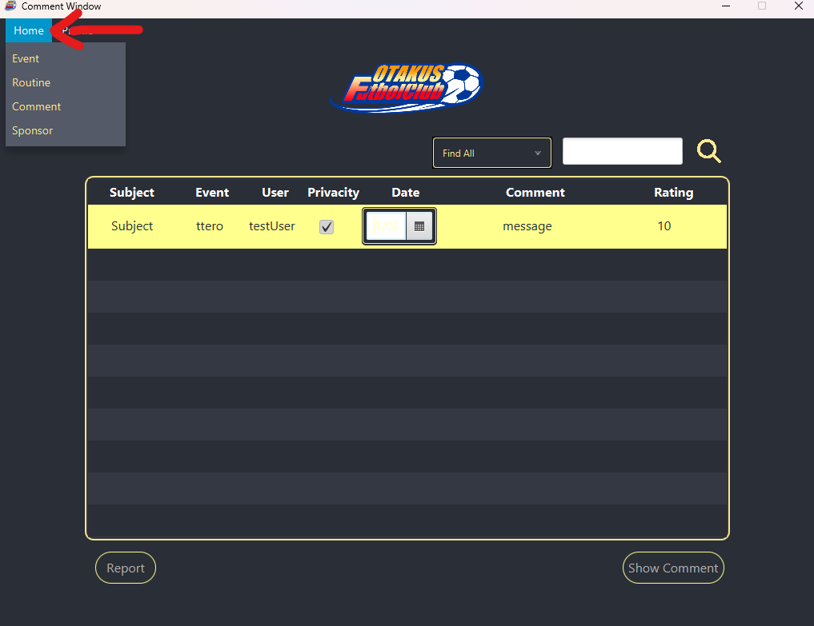
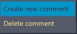
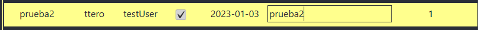
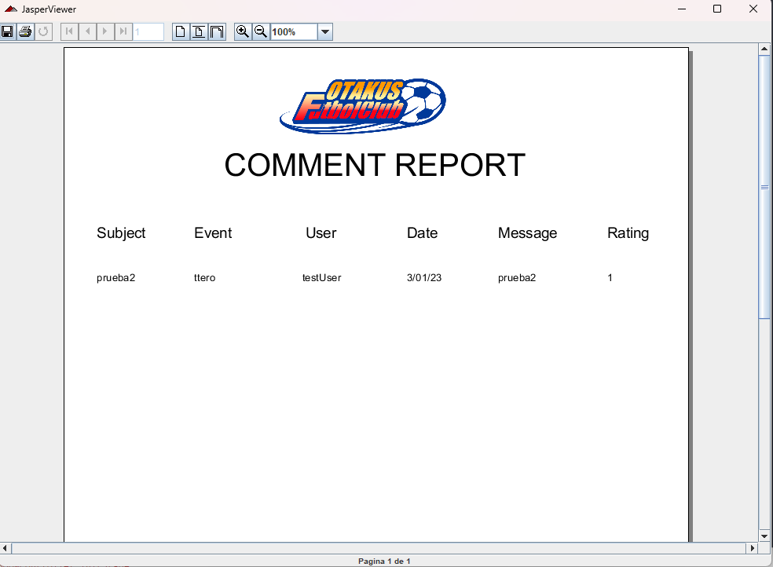
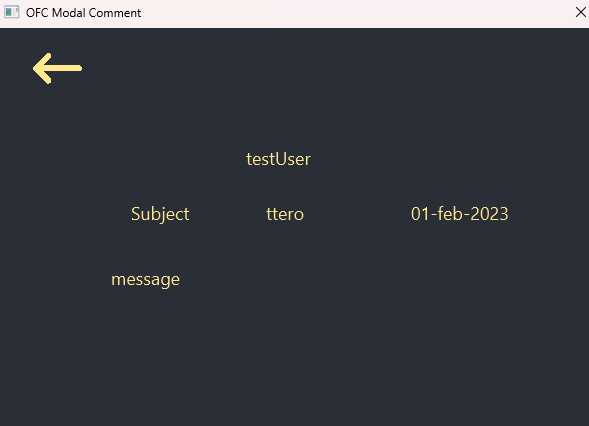

Esta ventana permite realizar las operaciones de mantenimiento básico de los comentarios. El usuario podrá mediante los controles de los que dispone la ventana crear, modificar y eliminar los comentarios de los eventos. Así mismo podrá generar un informe que contiene un listado de los comentarios con sus correspondientes datos.
Al precionar el boton Home que se encuentra en el menu, gracias a ello podemos desplazarnos entre ventanas

Para desplegar dicho menu se ha de dar click derecho en la tableview, esto desplegara el menu de contexto, dicho menu de contexto contara con las opciones de eliminar y crear comentario. Crear
Una vez se le de click a la opcion de crear se añadira una nueva fila con datos por defecto y se guardara en la base de datos, apartir de aqui lo ideal es editar los campos de dicha fila a gusto del usuario.
Modificar datos de ComentarioPara modificar los datos de los Comentarios se realiza dando dos veces click sobre la columna a editar Una vez realizadas las acciones anteriores, deberá pulsar el la tecla Enter para finalizar la operación y guardarlo tanto en la tabla tambien en la base de datos. Si no se produce ningún error, se modificarán los datos del comentario.
Para eliminar un comentario deberá seleccionar el comentario a borrar. A continuación, pulse en el botón Eliminar, del menu de contexto y se le solicitará confirmación para eliminar el comentario. Si confirma el borrado y no se produce ningún error se eliminará el comentario y se actualizará la tabla de comentarios que se muestra en la ventana.
Imprimir listado de comentariosPulsando el botón Report Se abrirá una ventana
donde puede ver un documento
que contiene un listado de los Comentarios que se encuentran el
la tabla actual

Mediante los botones de la parte superior de la ventana podrá
imprimir o almacenar dicho informe.
Pulsando el botón show Comment Se abrirá una ventana la cual podremos ver el comentario mejor
Pulsando el botón Salir se cerrará la aplicación.
AyudaPulsando el botón Ayuda verá este documento de ayuda.